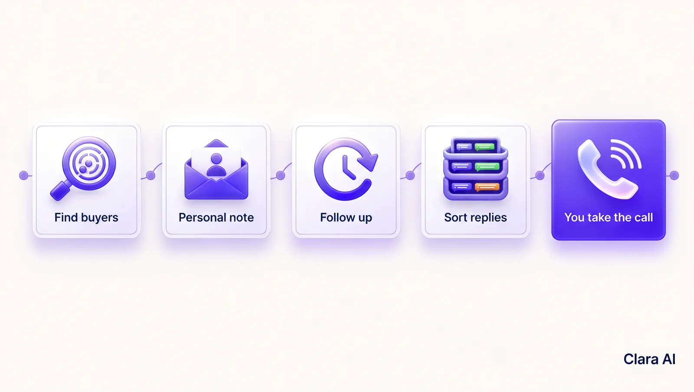

LinkedIn AI lead generation means using AI to do the repeat work of LinkedIn prospecting: finding the right buyers, sending short personal messages, following up and sorting replies. The best version for a busy B2B team is an AI agent that does this every working day and passes warm replies to you on WhatsApp, so you only take the sales calls.
Most B2B teams know LinkedIn is where their buyers are. The problem is that prospecting is steady, boring work that gets dropped when the team is busy. AI changes who does that work, but not every product that says "AI" works the same way. This guide explains the three main options, what to check and who it fits.
AI is useful in the parts of prospecting that are repetitive or need reading and writing at scale. In a well-run setup it handles:

What AI should not do is replace you on the call. People still buy from people, so the handover from agent to human is where the value is turned into revenue.
These three options get lumped together, but they put the work in different places:
| Option | Who builds the list and writes the copy | Who reads the replies | Your time each week | Best for |
|---|---|---|---|---|
| Automation tool | You | You | Medium to high | Teams with a person who owns LinkedIn |
| Traditional agency | The agency team | The agency, then you | Low to medium | Teams that want a human-only service |
| AI agent run for you | The agent, from facts you approve | Sorted by the agent, warm ones sent to you | Low (weekly review) | Teams that want daily consistency without a hire |
For a closer look at tools versus done-for-you services, read LinkedIn automation vs LinkedIn agency. If you are comparing with a hire, see LinkedIn outreach agent vs SDR hire.
The reasons we hear most often are practical:
It works best when your offer is clear and your buyer is easy to describe, for example operations heads at mid-size manufacturers or founders of B2B software firms.
A short checklist keeps you away from products that look good in a demo and fail in month two:
Treat it as a real question. LinkedIn's User Agreement restricts automated activity that breaks its rules, and its help page on prohibited software and extensions explains the thinking. Any automation carries some risk.
You lower that risk by keeping volume modest, messages personal and a person checking the work. High-volume blasting with identical messages is the pattern that causes trouble, and it also gets ignored by buyers.
We share only dated, real numbers. Haique Surfaces reached 345 people as of 21 Oct 2026, with 107 accepting and 14 replying. Sanjeet Ray, a business coach, saw 149 invites turn into 43 connections, 12 conversations and 3 warm leads in October 2026.
Your results depend on your offer, your target list and how quickly you reply to warm leads. Judge it over a full month on four numbers: people reached, acceptances, replies from real buyers and booked calls. Reply counts alone can mislead, so read the replies.
Be honest with yourself before you start. It is a weak fit if:
Clara AI is a 14-person AI team that builds and runs agents for 19 businesses. We set up the AI LinkedIn Outreach Agent and run it for you, so you do not need a tech team or a new hire. A person on our team checks the work, and warm replies reach you on WhatsApp. Tell us what your business does and the goal for the agent, and we aim to show you a first demo within 7 days.
If buyers also find companies like yours through Google or ChatGPT, our AI SEO Agent publishes a new post on your site every day. On our own blog, organic sessions rose 28% in 10–25 Oct 2026 compared with 24 Sep–9 Oct. Need something else automated? See our custom AI agents.